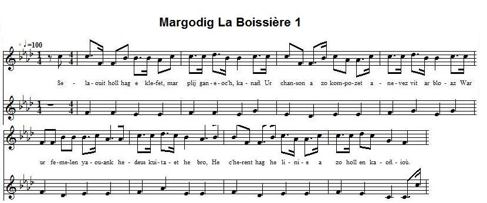
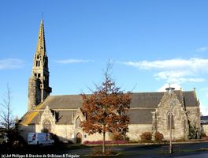
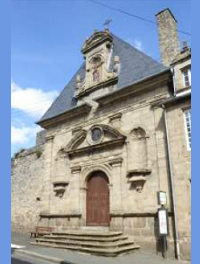

MARGODIK
Marguerite La Boissière
Chant collecté par Théodore Hersart de La Villemarqué
dans le 1er Carnet de Keransquer (p. 212) et dans le 2ème Carnet (pp.132 -136)

Cliquer pour entendre les mélodies Arrangées par Christian Souchon (c) 2015
|
A propos de la mélodie A propos du texte Classification Malrieu: M- 1041 M. Donatien Laurent indique pour ce chant: - Manuscrits: . Coll. Penguern t.92, 59: "Margodic La Boessière" (recueilli par Mme de Saint-Prix, et consultable en ligne dans la thèse de M. Yvon Le Rol "La langue des Gwerzioù...", p. 414). . Coll. Lédan, IV : Son "Margodic La Boessier". - Recueils: . Luzel: "Sonioù I": Margodic La Boessier (Pluzunet). Melle Eva Guillorel a publié en ligne une remarquable étude (qui prolonge des travaux de M. Donatien Laurent) de ce chant dans sa thèse de doctorat "La complainte et la plainte", pp. 422-443 (vol. II) et 798-799 (vol. IV). On y apprend que le second carnet de Keransquer contient la plus longue version connue de ce chant (110 vers); (cf. Le clerc de Kertanguy) et qu'elle ne semble pas avoir été collectée à Nizon du fait qu'elle cadre exactement avec les versions trégoroises. Depuis la publication en ligne de l'ensemble des 3 carnets en novembre 2018, il est possible de donner les deux versions. On les trouvera ci-après complétées, en tant que de besoin, par des extraits de la version notée par Mme de Saint-Prix telle qu'elle figure dans la thèse de M. Le Rol. |
"Soeurs de ND de la Charité du Refuge en adoration devant les Sacrés-Coeurs de Jésus et Marie" par Charles Lamy (1689-1743) - Museé de Tours (Leur robe grise est évoquée str. 28) |
About the tune About the lyrics Malrieu index ref.: M- 1041 M. Donatien Laurent found this song recorded: - In MS form: . Penguern Collection Book.92, 59: "Margodic La Boessière" (collected by Mme de Saint-Prix. It may be accessed on line in M. Yvon Le Rol's doctoral thesis titled "La langue des Gwerzioù...", p. 414). . Lédan collection, IV : Song "Margodic La Boessier". - In printed collections: . Luzel: "Sonioù I": Margodic La Boessier (Pluzunet). Melle Eva Guillorel published online a remarkable survey of this song (prolonging an investigation by M. Donatien Laurent) in her doctoral thesis "La complainte et la plainte", pp. 422-443 (vol. II) and 798-799 (vol. IV). As stated in this document the second Keransquer copybook: . includes the longest known version of this song (110 lines); (cf. Le clerc de Kertanguy) . which very likely was not collected in Nizon since it accurately tallies with the Treguier versions. Since the online publication of all 3 notebooks in November 2018, it is possible to present both versions. They will be found below, supplemented by extracts from the version noted by Madam. de Saint-Prix as it appears in Mr. Le Rol's doctoral thesis. |
|
BREZHONEK Margodik 1. Selaouit hag e [klefet, mar plij ganeoc'h, kanañ] Ur chanson [a zo kompozet a-nevez vit ar bloaz] War ur femelen yaouank he-deus kuitaet he bro, He c'herent hag he ligne a zo holl en kaoñioù. 3. Un devezh ma edo he zad en davarn da evañ Di antreas... ... Mab ar c'houer: 12. - Gwir eo ho merc'h Margodik ha me en em gare. Mar lezfemp da eurediñ, kement-se ne'm gafe. ... Margodig: 21. - Me zo giz ur c'hefeleg: n'on ket aes da atrap. Da nav eur e Langonet, ha da zeg e Langoat. 22. Me zo e giz al lapous a nij tre veg ar gwez. Pe vec'h d'am glask d'ar C'hastell me zo e Gemene. - ... Mab ar c'houer: 28. - Aet va mestrez d'ar gouent hag hi gwisket e griz. Me ya bremañ da ermit d'ar Forez ar Markiz. - (*) Langoat-Langonnet:72 km, Châteauneuf-du-Faou - Guéméné:50 km Margodik de La Boissière Tro-vil é N. 1763 1. Chilaouet mar plij ganeoc'h, hag e klefoc'h kanañ Ur zon war un dimezellig Margodig hi añv Ar plachik yaouank Margodig he-deus kuitaet he bro He cherent hag he minoned a zo holl e kañvioù. 2. Visant ar Pipi a lare: - Daoust hag am-eus hen graet? Me n'on ket dre gwall-guzul pe dre lasoù astennet, Pe a-hend-all dre kasoni ema-hi bet tizhet. - Murmuriñ a ra an dud penaoz e oa laeret. 3. En amzer e oa kollet e oa ar gwaz gant he zad E-barzh an ostaliri och evañ ur bennagad. (En ur zigarez-farsal, eñ eva d'he yec'hed) En ur evañ dhe yec'hed, dehzañ en-deuz laret: - Aotrou, ho merch Margodig a fell din da gaouet. - 4. An Itron a oa aze ha respontans de(zh)añ buan - Margodik n'eo ket maget vit mab ur peizant. He zad a zo denjentil, he mamm a zo itron Margodik a zo dimezell, dimezell a galon. 5. Margodik a zo dimezell, dimezell Laboissière, Margodik n'eo ket maget vit ur palafrigner. Ar peizant en-deus speret ha na lar ger ebet, Met lezel an hini gozh da ober he frezeg. 6. Graet he-deus he fakad, lart ne oa nemet hi, Me gred, a oe bet laeret gant Visant ar Pipi. Kaier 2: p. 133 / 69 [Décalage dans la numérotation. On attendait 70] 7. Penn erru 'n aotrou er ger, dezhañ a zo lavaret Gant hi verc'h Enorik "Margodik zo laeret!" Neuza a zavas ur fuzuilh. Bep lec'h dre an noblañs, Ne chom na kraou na karr-di, barzh an apartenañs. 8. Ne chom na kraou na karr-di, na kraou na marchosi Klasket e oa margodig beteg kambr ar chouldri. Klasket eo bet Margodig, ha d'ar c'hrech ha d'an traoñ Betek poull rod ar vilin he sellas an aotrou. 9. - Re zivezhat omp bremañ, poent eo deomp echuiñ Sonet eo kloch ar chouard, poent eo mont da goaniañ, Hag eno ni en em glevimp penaos e vezo graet Mi a skrivo dhe eontred, ha dhe moerebed. 10. Ha warchoazh, ken a vo deiz, da Wengamp a skrivin Hag eno vo archerien a gerzho, pa larin Hag a yel da di n hini en-deus hi lammet (aliet), Ni 'zesko dar peizant laerezh dimezelled! 11. An deiz war-lerch 'r beure, ez eas da di ar gwaz: - Klevet am-eus Margodik zo aliet ganeoch, Ha pa -peuz he aliet, c'hwi a renk he rentañ Warc'hoazh vioc'h krouget pe'z eoc'h d'ar galeoù - Kaier 2: p. 134 12. - Gwir eo, Aotrou, ho merc'h ha me en em garomp. Me garfe e vije amañ eus va c hostez. Ma rafen ur youc'hadeg, dam dous, dam charantez, Tro'r menezioù seizh lev, diouzhin ma mouezh an'fe. 13. Mar nam chlever achano, me yel gant an hent bras. Betek ur gozh wezenn, zo barzh al Langolvaz, Pe mar n'am c'hlev ac'hano me yel un tamm araok, Betek ar gozh wezenn, zo barzh al Lan-Detrog. 14. A-benn iliz ar feuntenn, ma mouez anavo prest, Mar ma-hi en Landerne, pe en tu-mañ da Vrest. - An aotrou deuas dar ger, pa nhall intent netra; D'ar person ya neuze zo finoc'h evitañ: (SP) 'N aotrou deus ar Gaspern, person hen Plougonver Amitie ha lineaj 'n-doa gant tud a Laboissiere. 15. War un digarez farsal en-deus laret dar gwaz: - Me oar kenkoulz ha te pelech emañ ar plach. Ha pa'z-peus hi aliet, te renk he eureujiñ, Pe z-po ezhomm biken da zont e-lech ma vin. - 16. Ne gompren ar finez en-deus bet ar person Pehini zo deuet da dapout ar gudon. - Mar na c'houll't don't en deiz, deu't en noz mar karit, Mar vez serret an iliz, c'hwi jomo er porched. - 17. - Me ya bremañ d'ar ger, me ya dre di he zad, Vit degas de(zh)añ keloù p'em-eus kavet ar c'had, Lemel ar femelen p'am-eus kavet ar c'had!. Kaier 2: p. 135 18. E dad hag eñ a ya gant an hent penn-da-benn, Vit rentañ 'benn dek eur e porched Sant Jermen. Eno a oa dastumet, he breur, he mamm, he zad, Evit lemmel Margodik digant he chamarad, 19. He breur pa'n-deus he gwelet, en-deus laret dezhi: - Heman zo un taol vil ma choar, peus graet enni. Pa klevfe hor cherent, hon dud, hag hol ligne, Dizenor, memez amzer, a rit dan diazez .- 20. Margodik oa plac'h kuit (fur) a respontas neuze: - Evidon bout dimezell, n'am-eus ket a leve, Hag 'ma gwelloch ganin mont e renk ('vezin grweg) ur peizant 'Vit 'n hini chom pelloc'h (e nec'h) e gwall diaezamant ... 23. He zad pa 'n-deuz hi klevet, en-deuz laret dezhi: "Me chall, ma merc'h", emezañ, "te yel d'al leandi (leanez)". Ac'hane oa lemmet ha kaset ha rentet er gouent, (Pelloc'h ne vec'h ket godiset er ger na war ar maez) Ha rentet,'berr amzer, er gouent e Gwengamp.- 24. He dad hag eñ chom neuze ur pennad er porched, O tonet da brederiñ, penaos e oant tizhet, [En marge à gauche verticalement.:] - Gwell din eo bout e penn an daol,gant ar paysantezed Eget bout e penn an traoñ gant an dimezelled. - Kaier 2: p. 136 25. Aotrou Doue, ma Doue, bremañ, me wel ervat, Penaos ez on me tizhet, gant an aotrou n abad; 26. Sellit tu an treitouraj, ha 'n-eus bet ar person, Da zigoriñ ma chaoued, da leuskel ma gudon. Distennet eo ma lasoù,ne oant ket stignet mat, Aet eo ma zaol da fall eñ n'eo ket deut da vad. 27 Distennet eo ma lasoù hag aet war an tu all Dilammet eo an oadvezh, hag aet ann taol da fall ; Aet ma douz dar gouent hag hi leun a c'hlac'har, Evel dun durzhunellig pa vez kollet he far, 28. Aet va mestrez d'ar gouent hag hi gwisket e griz. Me zavo ul Lean-di el lez Koad ar Markiz E-lec'h biken Margodik ma daoulagad na welfen E-lec'h birviken, biskoaz ma mestrez nem welo ken. 29. - Salokras, va servicher da lean na it ket, Evit lean dar c'hoajoù, brizh c'hwi na it ket! Leaned, tro ar c'hoajoù, n'edont 'met drouk louzoù Ha c'hoazh no-defont ket neñv e leizh o c'horf a wechoù. Kaier 2: p. 136 bis / 72 30. - Nebeut awalc'h, emezañ, mar n'eo gontant ma c'halon Rak c'hwi echu hen karet, karet oa kenañ Kentañ [mout difar eurvat den em wel goude-se]. KLT gand Christian Souchon. |
TRADUCTION FRANCAISE Marguerite La Boissière 1. Ecoutez, s'il [vous plait d'entendre une chanson nouvelle] Chanson [composée cette année] sur une demoiselle] Laquelle quitta son pays et toute sa famille. Quelle douleur pour des parents que de perdre une fille! . 2. Un jour, son père était en train de boire à la taverne, Il voit entrer [un paysan qui l'aborde en ces termes:] ... Le fils de paysan: 12. - Oui nous nous aimons, je l'avoue. En vue du mariage Donnez-nous un rendez-vous; à m'y rendre je m'engage. ... Marguerite: 21. - Telle la bécasse, ma foi, je me joue de vos leurres: A neuf heures à Langonnet, à Langoat à dix heures. (*) 22. Je suis semblable à l'oiseau qui vole au-dessus des arbres. Me croit-on à Châteauneuf? A Guéméné je m'attarde. ... Le fils de paysan: 28. - Ma maîtresse est dans un couvent, vêtue de bure grise. Et moi je veux vivre en ermite au Bois de la Marquise. - (*) Langoat-Langonnet:72 km, Châteauneuf-du-Faou - Guéméné:50 km Margodik de La Boissière Mésaventure à ND de la Charité. 1763 1. Ecoutez, [s'il vous plait d'entendre un chant qu'on vient de faire] Sur Mademoiselle Marguerite de La Boissière. Laquelle quitta son pays et toute sa famille. Quelle douleur pour des parents que de perdre une fille! 2. Vincent, fils de Pierre, disait: - Suis-je de ce désastre L'auteur, par mes mauvais conseils ou par mes manigances? Ou fut-elle atteinte par la méchanceté du monde? - Le bruit de son enlèvement circulait à la ronde. 3. Quand elle disparut, la gars était avec son père En train de boire un coup, je crois, tous deux à la taverne. (Prenant prétexte de boire à la santé de sa fille) Buvant à la santé de sa fille, il fit sa demande: - A la main de votre fille Margot, j'ose prétendre. - 4. La mère qui n'était pas loin s'empressa de répondre: - Le fils d'un paysan n'est point ce qu'il nous faut pour gendre. Pour la fille d'un gentilhomme et d'une grande dame, Abandonner sa condition, serait perdre son âme. 5. Ma fille, vous le savez bien, est une La Boissière. S'allier à des palefreniers, cela ne lui sied guère. - Le jeune homme avait de l'esprit, autant que de patience: Il laissa la dame achever ses longues remontrances 6. Et déballer tout son paquet: on eût presque pu croire Que c'est elle que l'on avait enlevée dans l'histoire. Carnet 2: p. 133 / 69 [Décalage dans la numérotation. On attendait 70] 7. Le soir quand ils rentrent chez eux, l'autre fille, Honorée Leur apprend la disparition de Margot, éplorée: Prenant son fusil le seigneur de la gentilhommière Inspecte le moindre recoin, la maison tout entière: 8. La cuisine, puis le salon, les chambres, l'écurie Et le pigeonnier, partout l'on cherche et "Margot!" l'on crie. On suppose Margot en haut, en bas on la devine, Jusque dans la roue du moulin, que son père examine. 9. - Il se fait tard. Il va falloir arrêter, brave troupe: C'est la cloche du couvre-feu, c'est l'heure de la soupe. Ensuite nous déciderons ce qu'il convient de faire: A ses tantes et oncles j'écrirai. Pénible affaire! 10. A Guingamp dès l'aube je veux envoyer un message: Et les gendarmes se mettront en route c'est l'usage. Ils se rendront chez le garçon dont les conseils l'inspirent; Je vais t'apprendre, paysan, à suborner les filles! - 11. Le lendemain de bon matin chez l'homme il se présente: - Margot suit tes conseils, dit-on. La chose est importante: C'est à toi qu'il revient de me rendre mon héritière Ou sinon je te promets la potence ou les galères! - Carnet 2: p. 134 12.. - Il est vrai que Margot et moi, nous aimons d'amour tendre. Laissez-nous donc nous marier et moi, sans plus attendre. Je n'ai qu'à l'appeler bien fort, elle accourra sans faute, Même à plus de sept lieues de là, ma voix vers elle porte. 13. Dût-elle ne m'entendre pas, je suivrai la grand' route Jusqu'au l'arbre de Langolvas: elle entendra sans doute... Un peu plus loin, j'irai, sinon, refaire l'expérience Au viel arbre de Saint-Eutrope. Admirez ma patience! 14. Ma voix portera jusqu'à l'église de La Fontaine, Jusqu'à Brest ou bien Landerneau, distinctement sans peine...- Le noble n'y comprenant rien a rejoint ses pénates; C'est au recteur, bien plus malin, de jouer les diplomates, (SP) Le vieux recteur de Plougonver, un nommé de Gasperne, Un ami et proche parent de tous les La Boissière 15. En ayant l'air de plaisanter, il a dit d'un ton bravache: - Je sais aussi bien que toi-même où la fille se cache. Je sais que tu l'as conseillée pour l'épouser, sans doute Ou bien ne t'avise jamais plus de croiser ma route! - 16. Le pauvre garçon ne voit pas dans quel piège il tombe, Que le prêtre n'est là que pour rattraper la colombe . - Si vous craignez le jour, venez plutôt la nuit tombée! Attendez-moi sous le porche, si l'église est fermée! - 17. - Quant à moi je cours de ce pas, réconforter le père Lui porter la nouvelle que j'ai retrouvé le lièvre Que la hase j'attraperai, sans peine je l'espère! Carnet 2: p. 135 18. Le gars et son père pleins d'une confiance sans faille Vont au porche de Saint-Germain, en vue des épousailles. C'est là que les guettaient le frère et la mère et le père Lesquels ont arraché Margot des bras du pauvre hère. 19. Son frère cadet répétait à qui voulait l'entendre: - Ma sur, vous nous déshonorez, vous devez le comprendre. Quand tous nos parents et alliés auront vent de la chose; Nous serons blâmés par eux. Dire en quels termes je n'ose. - 20. Margot répondit à son tour à cette philippique: - De l'avoir suivi de plein gré, sachez que je me pique. Tout aristocrate que je sois, je n'ai point de rente. J'aime mieux déroger plutôt que de vivre en mendiante. - ... 23. Mais son père qui l'entendait à répondu bien vite: - Je m'en vais vous mettre au couvent, savez-vous, ma peite! - Une voiture est arrivée et la voilà conduite Vers un couvent de la contrée: l'affaire est étouffée Et c'est au couvent de Guingamp qu'elle fut enfermée! 24. La Boissière et le gars s'attardent un peu sous le porche Ils en viennent à réfléchir au pourquoi de la chose: [En marge à gauche verticalement.:] - Je préfère présider une table paysanne Qu'être traité comme un paria malgré ma noble femme.- Carnet 2: p. 136 25. Seigneur Dieu, je vois à présent de façon fort précise Comment cet abbé m'a trompé, quelle fut sa traîtrise. 26. Le recteur a su m'amener grâce à son stratagème, Ouvrant ma cage, à laisser s'envoler celle que j'aime. Mes collets étaient mal posés ou bien tendus à peine, Me voilà moi-même étourdi par le coup que j'assène. 27. A mes collets mal posés tel est pris qui croyait prendre L'âge vient à présent et j'ai laissé passé ma chance; Ma bienaimée est au couvent et le chagrin la ronge, Pauvre tourterelle esseulée! Quel malheur quand j'y songe! 28. Ma bienaimée est au couvent, vêtue de bure grise. Je veux fonder un ermitage au Bois de la Marquise. Où jamais plus mes yeux ne te verront, ma Marguerite Et à jamais me quittera l'espérance interdite. 29. - N'en faites rien, mon doux ami, ne vous faites point prêtre! Surtout pas moine de forêt, fol esprit que vous êtes! Les moines qui hantent les bois sont de mauvaises herbes Le Ciel n'habite point la totalité de leur être... Carnet 2: p. 136 bis / 72 30. - Tant pis pour lui, disait-il, si mon coeur fait la grimace Vous avez cessé de l'aimer: mieux vaut que l'amour passe. Pour la première fois [je me vois seul, grand bien me fasse!] Traduction: Christian Souchon (c) 2015 |
ENGLISH TRANSLATION Margaret La Boissière 1. O, listen all, please, [and you shall hear now a brand new ditty] The song you'll hear, [composed this year, I have learnt quite recently] The lass addressed is one who left the dwelling of her parents Abandoning her kith and kin who sadly mourned her absence . 2. Her father sat in an inn at a table quenching his thirst; In came a [certain wealthy farmer's son who greeted him first, ... The farmer's son: 12. - I admit that we are in love and would mary readily, And we shall go wherever you will decide to direct me. ... Margaret: 21. - I am that type of bird: a snipe not easy to be shot at. At nine o' clock at Langonnet, and at ten at Langoat. (*) 22. I am that type of bird whose flight your reckonings will betray . The task is tough: from Chateauneuf I could fly to Guéméné. (*) - ... The farmer's son: 28. - My sweetheart went to a convent: she's clad in grey all over. To Marquis' Grove now I shall rove, a poor hermit forever. - (*) Langoat-Langonnet:72 km, Châteauneuf-du-Faou - Guéméné:50 km Margodik de La Boissière Mishap - ND de la Charité. 1763 1. O, listen all, please, [and you shall hear a fine, brand-new ditty The song you'll hear, composed this year, I have learnt quite recently] The lass addressed is one who left the dwelling of her parents Abandoning her kith and kin who sadly mourned her absence. 2. Vincent the son of Peter wondered why for this disaster He was blamed twice: his bad advice first, then his foolish caper. He was a victim to the vindictive world that's so wicked, This gossip of abducted love by all was circulated. - 3. When she disappeared, the lad was conversing with her father, Having a drink, they were I think, both in the inn together. (Taking the pretext of drinking the health of his dear daughter) He drank the wellborn daughter's health and asked straightforwardly - My Lord, your daughter Maggie I ask you herewith to marry. - 4. The lady mother was not far and hastened to give answer: - Do not imagine that she could stoop to espouse a farmer. This girl is worth the highest birth, her mother is a lady, Her pedigree of high degree attests to her quality. 5. This girl, as you already knew, is born a La Boissière, Don't think that you could bring her to become a "roturiere"! - The boy was sane and did refrain from stopping the orator. He left her time her long, but fine oration to deliver, 6. Unpack her whole package: you would almost have believed truly That it was she who had been kidnapped in this messy story. Copybook 2: p. 133 / 69 [Here a shift in numbering. 70 was expected] 7. But on the same day, when they came home, they heard an awful thing: Their daughter Honora told them, of Maggie's disappearing. He took his gun. They searched in vain, every nook, every cranny. Look as they would, nowhere they could discover the young lady. 8. Not in the hall, and not in all bedrooms, kitchen and the rest; Neither in horse stable nor loft with holes for pigeons to nest. They looked upstairs, they looked downstairs, looked everywhere for Maggie The very mill and its big wheel the Lord scanned with scrutiny! 9. - It's getting dark here in the park, it's time to rest most surely. They ring the bell. It is to tell us that the meal is ready. Afterwards we shall all agree on the best course to follow, To all aunts, aye, and uncles I shall write to soothe my sorrow. 10. Tomorrow at dawn I will that someone be sent to Guingamp That the gendarmes take up their arms and prevent that may decamp, A certain lad who, I know, had inspired her with these follies However rich, I must him teach not to abduct our ladies. 11. Now the next day the Lord did pay the young fellow a visit: : For well he knows that she follows his advices. He knows it: - Listen, you must give back to us our lily of the valley Or else I do send you soon to the gallows or the galley! Copybook 2: p. 134 12. - I can't deny, Maggie and I love one another dearly. D'you know what you have got to do? Just allow us to marry... I'll give a cry, right loud and high, I know my love will hear me, Seven leagues far from her you are, but she'll know my voice surely. 13. Should she not hear, I would from here go to the place where she hides. We did agree on an old tree in the parish Langolvas.- Should she again fail to hear, then I would go a bit further, As far as the old giant tree beyond Saint Eutrope's border. 14. Or to the birch near Fountainchurch. My voice she would recognize And should she go to Landerneau or Brest she would know my cries. - The gentleman returned home and he knew not what to decide; The parson was so clever as a good advice to provide: (SP) This Father Gaspern was the parson of the town Plougonver He was united by blood ties and friendship with the Boissières. 15. Was it to tease, was it to please him? He said to the stripling: - Of course I know, just as you do, where the young girl is hiding. But since you are going that far, sir, you must needs get married Or else I swear that you won't dare to cross my way unworried! - 16. The silly boy, used as decoy, fails to notice the bad trap The priest has laid with his own aid. On his dear dove it will snap! - I think you may not come by day. You rather had come by night. If the church door is shut, before the porch wait. Please do comply! - 17. - I'm going home, then I shall roam on to her father's quarters: I'll break the news that there's no use worrying: the hare is spotted. So is the doe; and now we do capture the both together!- Copybook 2: p. 135 18. And in the evening ensuing, he had come with the maiden. They had hurried to get married in the church of Saint Germain Their hope was marred: in the churchyard her brother hid, her mother, Her father too: the three withdrew the young lass from her lover. 19. Alas, her younger brother found it right to make a lecture: - This villainy our family will never pardon, sister. For our relatives won't be late in spreading wide the story And soon the whole world will not thole our race stained with infamy. - 20. But Maggie was so saucy as to retort though indicted: - It was my scheme to marry him. They thought I was abducted. - As noble as I am, I was all this time near starvation. To prevent it, I prefer it to marry beneath station - ... 23. Her father cut in and he shut this fountain of eloquence: - There is a convent here in town where you shall have admittance.- A car arrived that they had hired and the poor girl was driven, So that the fact would be hushed up, to a convent for women. It was a convent of Guingamp which to that end was chosen! 24. La Boissière and the young man lingered a little in the porch They came to think about the things wherein their fancies diverged. [In the left margin vertically .:] - I was to swap sitting atop of a countryside table For being looked at like a pariah by nobles: how hateable! - Copybook 2: p. 136 25. - That a priest, God, could do such fraud I could not expect surely; That an abbot devised such plot upon the verge of treachery; 26. The parson knew how to bring you within arm's reach the best way: He made me open my cage, hoped the fair bird would fly away. My nooses were, I am aware of it now, badly covered, And here am I, myself, stunned by the blow I had delivered. 27. In my poor snare, by now it's clear, the one who was caught was me Age is coming now and I think luck has changed definitely My beloved went to the convent and grief is gnawing at her, Poor lonely dove whom cruel fate drove away from me forever! 28. My sweetheart went to a convent: she's clad in grey all over. To Marquis' Grove I want to rove, a poor hermit forever. - Now my heart will nevermore thrill about you who did elope And I shall give up, I shall leave forever forbidden hope. 29. - Don't do anything, my darling, of the like, it goes too far! Say, are you drunk? A forest monk? Crazy spirit that you are! The monks who haunt the woods I taunt with being nothing but bad weeds For God does not inspire the lot of them with laudable deeds ... Copybook 2: p. 136 bis / 72 30. - Too bad, my heart, for you who start, it seems, a wry face to make You've stopped to love. It is kind of relief, when luck is at stake I'm left alone: it's all well done, now let bygones be bygones! Translation: Christian Souchon (c) 2020 |
 COMPARAISON DES 3 VERSIONS:
COMPARAISON DES 3 VERSIONS:NOTES:
|
Remarques Comme dans Le Clerc Le Loyer, on a affaire dans ce chant à un "rapt de séduction" par lequel une jeune noble qui se laisse enlever par le fils instruit (clerc) d'un fermier enrichi, tente de forcer ses parents à régulariser sa situation et à admettre la mésalliance. Elle reflète une évolution sociale caractéristique de la fin du 18ème siècle. Dans la deuxième version de La Villemarqué, Margot répond à son frère: 20. ..."Evidon bout dimezel, n'am-eus ket a leve Hag ema gwelloc'h ganin mont e rank ur peizant, Evit 'n hini chom pelloc'h, e gwall diaezamant." 20. ..."J'ai beau être une demoiselle, je n'ai point de rente, Et je préfère m'abaisser à l'état de manante, Plutôt que subir plus longtemps ma misère présente." Elle appartient à une famille noble qui n'a plus les moyens de tenir son rang. Il est possible de confronter la chanson avec la réalité historique telle qu'elle est reflétée dans les registres sans que l'on parvienne pour autant à des identifications indiscutables.  Les toponymes cités dans la chanson, église Saint Germain, forêt du Marquis ou de Beffou, renvoient à la paroisse de Plougonver, à une quinzaine de km à l'ouest de Guingamp, hypothèse confirmée par des indications portées en regard du titre et en marge de son manuscrit par Mme de Saint-Prix: paroisse de Plougonver, chapelle de Saint-Tugdual, moulin du Pont-Meur, forêt de Coat-an-Noz et Ménez-Bré.La version Saint-Prix, à la 3ème strophe, donne en outre le nom de l'auberge: "e Penn ar Mur Kleuyoù" (Le Bout du Mur aux Fossés), et évoque le lieu-dit "Keranna" où habitent les oncles de la jeune fille, auxquels il convient d'envoyer une lettre, mais on ne peut guère en tirer grand' chose. Quant au lieu où la jeune fille pourrait se cacher, la chanson renvoie à Morlaix, à une quarantaine de km plus à l'ouest: arbre de Langolvas, à l'est de la ville. Mais il s'agit d'une hyperbole: la version Saint-Prix, cite des lieux bien plus lointains: Landerneau, Brest. La chanson évoque un couvent à Guingamp qui pourrait être celui de Notre-Dame de la Charité du Refuge, situé au faubourg de Montbareil où les filles qui mettent en péril l'honneur familial sont enfermées, soit à la demande de la famille, soit sur décision du recteur de paroisse. C'est le moyen retenu en dernier lieu pour résoudre ce conflit, mais d'autres ont été envisagés: - le recours à la justice (le père parle de potence et de galères; dans la version Saint-Prix, il veut tout d'abord appeler "an archerien", les gendarmes!) - ou à un arbitre, qui se trouve être le recteur, comme c'est effectivement souvent le cas avant la Révolution. La Villemarqué s'était penché sur la datation de cet événement et avait indiqué sous le titre, dans le 2ème carnet, "1763". M. Donatien Laurent en a conclu que l'héroïne ne pouvait être que Marguerite-Yvonne de La Boissière - Kerret, qui vécut dans la seconde moitié du 18e siècle, au manoir de Kergus à Plougonver. Les registres paroissiaux de Plougonver nous apprennent que Marguerite-Yvonne de La Boissière, née en 1744 et décédée en 1806, était fille de Jean-Joseph de La Boissière et de Marguerite de Kerdaniel et qu'elle avait une sur ainée, Amadore-Renée qui pourrait être l'Hénori (Honorée) de la chanson. La pauvreté de la famille semble confirmée par son absence dans les rôles de capitation de noblesse, consultés entre 1740 et 1752. En 1763 elle signe en tant que marraine l'acte de baptême de François Le Morellec: elle est encore demoiselle. Trente ans plus tard on la retrouve à Jersey où elle a émigré à l'été 1792 comme beaucoup de nobles de Bretagne. Les registres locaux signalent en outre la présence d'un prêtre de Plougonver. Marguerite, toujours célibataire, meurt le 2 mai 1806 à Saint-Hélier (Jersey). Sa sur Amadore, émigrée avec elle, meurt deux ans plus tard. La version Saint-Prix fournit un nouvel élément essentiel: elle précise en effet: SP b. "An aotroù deus ar Garzpern a oa person a Blougonver. Amitié ha ligneaj e-noa gant tud a La Boissière." SP b. "Monsieur du Garzpern était le recteur de Plougonver. Lié par l'amitié et le sang avec les La Boissière." Il s'agit donc de Charles-Olivier du Garzpern qui fut effectivement recteur de Plougonver depuis 1737. En 1790 il refusera de prêter serment à la constitution civile du clergé, geste minoritaire dans le district de Guingamp. Il ne sera pas cependant éloigné de sa paroisse car il est alors agé de 81 ans. On n'a pu établir l'existence des alliances entre sa famille et les La Boissière, signalées par Mme de Saint-Prix. Il est appelé "Visent ar Bibi" dans le 2ème carnet de Keransquer et "Visant ar Pipi" chez Luzel. Ces noms signifient "Vincent fils de Pierre". Il est fils de paysan ("mab al labourer") dans la version Saint-Prix et dans notre version il est dit "palefrenier". Dans la version Saint-Prix ainsi qu'une autre, il se dit auteur de la chanson et nous apprend qu'il était (aussi) clerc étudiant à Morlaix, diplômé du collège de Creac'h-Joli et, depuis, au service d'un procureur dans la ville de Guingamp: SP e. "Nep e-neus kompozet ar son zo ur c'hloarek yaouank, A zo gant ur prokuror re ger deus a Wengamp, A oa bet e Montroulez o poursuiñ e studi, Hag a oa bet reformet deus skolaj Kreac'h-Joli." Dans son deuxième carnet d'enquête, page 3 / 2 (à propos du texre, La Villemarqué nous livre, en note, une indication, qui permet peut-être d'ajouter ce chant à la liste déjà longue des chants collectés à Leuhan: "Son Margodik zo bet savet gant Visent ar Bibi a chome e Gersalaün e parrez Leuc'han" "La chanson de Margodic fut composée par Vincent fils de Pierre qui habitait à Kersalaün en Leuhan." (cf. Le faucon "Une découverte de M. Goulven Péron"). Il existe effectivement un écart, Kersalaün, au nord-ouest du bourg de Leuhan. Cette paroisse située près de Châteauneuf-du-Faou en Cornouaille centrale est très éloignée de Plougonver (plus de 50 km) et de tous les autres lieux cités dans le chant. Le collège de Créac'h-Joly fut fondé à Morlaix en 1597 et fermé en raison de son délabrement entre 1760 et 1787. On ne connait pas de listes d'élèves de cet établissement, mais la comparaison avec le collège de Tréguier permet de supposer que la moitié d'entre eux étaient des fils de paysans. La version "Saint-Prix" précise que le garçon se fera ermite "e bord Koat ar Milin", "à la lisière du Bois du Moulin." Eva Guillorel écrit à son sujet (p.441 de sa thèse): "... Fondé en 1677, [c']est à la fois létablissement le mieux documenté et celui qui correspond le plus au profil de Marguerite-Yvonne de La Boissière : la tâche revendiquée de cet établissement est en effet de « rappeler à leur devoir les filles ou femmes tombées dans le libertinage », et ce « pour toujours ou pour tout le temps quon veut ». Quatre types de pensionnaires fréquentent ce couvent: - les recluses ou pénitentes détenues par suite dune décision de justice ou dune lettre de cachet, - les recluses sur ordre parental ou familial non sanctionné par acte judiciaire, - les pensionnaires entrées librement - et enfin celles qui sont acceptées par charité"... [...] Des références à une « Melle La Boissière » (sans prénom) apparaissent à quatre reprises entre 1769 dans le mémoire qui détaille les sommes dues pour la consommation du vin et 1776 dans le « cahier pour marquer les lettres écrites pour affaires » . Mais on retrouve également en 1782, dans le registre des deniers reçus pour les pensions, une référence au paiement par Madame de La Boissière dune pension pour sa fille « Melle La Boissière, entrée ce jour aux pensionnaires » ainsi que dautres paiements en 1783 dont lun pour « sa fille sortie ce jour ». Ces indications ne permettent pas d'affirmer avec certitude que Marguerite ait fréquenté cet établissement, mais confirment l'existence de rapports étroits entre ce couvent et les La Boissière (ainsi que les Du Garzpern qui apparaissent également dans plusieurs registres). Dans sa remarquable thèse, Melle Guillorel, a exclu le Barzhaz des sources consultables en matière de tradition orale. Cependant elle conclut son étude par diverses considérations, dont celle-ci: "Si lon considère à nouveau, au terme de cette enquête, lindication de datation portée par La Villemarqué en tête de la version quil a notée dans son deuxième carnet, la similitude entre la date quil suggère et lhypothèse formulée daprès la confrontation approfondie avec des sources écrites est particulièrement saisissante. 1763, lannée proposée par ce collecteur, correspond exactement à la dernière attestation recensée de Marguerite-Yvonne de La Boissière dans la paroisse de Plougonver, avant sa présence présumée au couvent de Montbareil en 1769. La jeune fille est alors âgée de 19 ans, et cette date pourrait parfaitement convenir, à tous égards, à celle de son enlèvement." Notons que l'historien Louis Le Guennec avait également cherché, en 1907, à savoir à quels faits historiques cette chanson faisait allusion et pensait à une Marguerite de La Boissière décédée en 1654 et enterrée à Ploujean (Morlaix). Le recours au couvent comme à un moyen d'opprimer les femmes était au centre du "sulfureux" roman de Denis Diderot, "La religieuse" (1780): la malheureuse Suzanne Simonin est enfermée au couvent pour y expier la faute de sa mère dont elle est l'enfant illégitime. |
Remarks Like in Clerk Le Loyer, the present song features an "agreed abduction" whereby a low gentry girl, elopes with the educated son (a clerk) of an enriched farmer, to force her parents to legalize her situation and accept that she should marry beneath herself. These songs highlight the social upheavals in the late 18th century. In the second version collected by La Villemarqué, Margot answers to her brother: 20. ..."Evidon bout dimezel, n'am-eus ket a leve Hag ema gwelloc'h ganin mont e rank ur peizant, Evit en hini chom pelloc'h, e gwall diaezamant." 20. ..."What's the use of my being a lady, I've no income to live on. I prefer to stoop to marrying a peasant And not to be in want forever." She belongs to a noble family deprived of the means of maintaining their rank. It seems possible to collate the song with certain facts registered in historical records, but no to found on this comparison irrefragable conclusions. The place names mentioned in the song, Saint Germain's Church, Marquis' or Beffou Grove point to the parish Plougonver, about 15 kilometres west of Guingamp, as do the hints written by the hand of Mme de Saint-Prix next to the title and in the margin of her manuscript: parish Plougonver, Saint-Tugdual Chapel, Pont-Meur Mill, Coat-an-Noz Wood and Mount Ménez-Bré. The same Saint-Prix version, in stanza 3, unveils furthermore how the inn was styled: "e Penn ar Mur Kleuyoù" "Ditch Wall End" and evokes "Keranna", the dwelling place of uncles of the girl's who should be informed by a letter. But these do not prove useful clues. As for the girl's hiding place, the song points to Morlaix, about forty kilometres further west: the Langolvas tree, in a western district of the town. But the boy is certainly exaggerating the distance for which his call will be heard, as does the Saint-Prix version which quotes places that are still further off: Landerneau, Brest.  The song mentions a women's convent in Guingamp which could be Notre-Dame de la Charité du Refuge, in the suburb Montbareil where girls whose behaviour places a family's honour in jeopardy were shut away, either at the family's request, or pursuant to a parson's decision.In the present instance, it is the mean resorted to to settle the conflict, after other methods were considered: - lodging a complaint (the girl's father threatens with gallows and galleys; in the Saint-Prix version, he wanted to call "an archerien", the police!) - or entrusting an arbitrator with the mission of settling the case. He happened to be the vicar of the parish, as was usual before the French Revolution. La Villemarqué had endeavoured to date these events and added under the title in his second copybook, "1763". M. Donatien Laurent inferred that the heroine of the story was none other than Marguerite-Yvonne de La Boissière - Kerret, who lived in the second half of the 18th century, at Kergus Manor near Plougonver. As stated in the parish records of Plougonver, Marguerite-Yvonne de La Boissière, was born in 1744 and died in 1806. Her parents were Jean-Joseph de La Boissière and Marguerite de Kerdaniel and one of her sisters, Amadore-Renée could be the Henori (Honora) of the song. That her family had become destitute may be inferred from their not being mentioned in the income tax lists drawn up for the nobility between 1740 and 1752. In 1763, she signs as the godmother the christening certificate of François Le Morellec: she is unmarried. Thirty years later, she lives in Jersey where she had emigrated in 1792, as so many Breton aristocrats. Local records also hint at the presence of a Plougonver priest. Marguerite, still unmarried, died on 2nd May 1806 in Saint-Hélier (Jersey). Her sister Amadore, who had followed her, died two years later. The Saint-Prix version provides us with a capital clue, since it states: SP b."An aotroù deus ar Garzpern a oa person a Blougonver. Amitié ha ligneaj e-noa gant tud a La Boissière." SP b. "Sir Garzpern was the parson of Plougonver, United by blood ties and bonds of friendship with the La Boissières." This points to Charles-Olivier du Garzpern who had been really parson of Plougonver since 1737. In 1790 he will refuse to take the oath of allegiance to the Civil Constitution of the Clergy, unlike most of the priests in the Guingamp area. And yet he was not driven away from his parish due to his old age (he was then over 81). Blood ties between his and the La Boissière family, to which Mme de Saint-Prix refers, could not be ascertained. He is named "Visent ar Bibi" in the 2nd Keransquer copybook and "Visant ar Pipi" in the Luzel version. These names mean "Vincent, son of Peter". He is dubbed a farmer's son ("mab al labourer") in the Saint-Prix version, whilst, in our version, the girl is at a risk of becoming an "ostler's wife"("palefrenière"). In the Saint-Prix and another version, he introduces himself as the author of the song, adding that he (also) was a school clerk in Morlaix, an alumnus of Creac'h-Joli college, since then in service with a prosecutor in Guingamp town: SP e. "Nep e-neus kompozet ar son zo ur c'hloarek yaouank, A zo gant ur prokuror re ger deus a Wengamp, A oa bet e Montroulez o poursuiñ e studi, Hag a oa bet reformet deus skolaj Kreac'h-Joli." In his second collecting book page 3 / 2 (about the lyrics) , La Villemarqué gives us, in a foot note, an indication which might allow us to include the present song on the already long list of songs collected in Leuhan: "Son Margodik zo bet savet gant Visent ar Bibi a chome e Gersalaün e parrez Leuc'han" "The song of Margodic was composed by Vincent son of Peter who lived at Kersalaün near Leuhan." (cf. The Hawk "M. Goulven Péron's discovery"). There is really a hamlet Kersalaün, north-west of Leuhan town. This parish is located near Châteauneuf-du-Faou in Central Cornouaille, i.e. far away from Plougonver (over 50 km) and from the other places quoted in this song. Créac'h-Joly College was founded in Morlaix in 1597 and was shut down on account of its delapidated state between 1760 and 1787. No list of pupils of this college is known but the comparison with a similar Tréguier college allows the inference that half of them were country boys. The "Saint-Prix" version specifies that the boys will live as a hermit "e bord Koat ar Milin", "on the edge of the Mill Wood." Eva Guillorel writes about this convent (p.441 of her thesis): "... It was founded in 1677. [It] is both the best-documented and the best-adapted convent to accommodate Marguerite-Yvonne de La Boissière's specific case: it claims to be the best place "where are reminded of their duties, either forever or for an agreed lapse of time, girls and women indulging in dissoluteness». Four classes of lodgers are admitted: - recluses or penitents whose custody was ordered by a court of justice or a "lettre de cachet", - recluses by parental or family request disconnected from judicial practice, - voluntarily secluded women, - women and girls who were charitably admitted" [...] References to a « Melle La Boissière » (without Christian name) appear four times between 1769 in a statement of expenses relating to wine consumption and 1776 in the «book where are recorded letters written in connection with specific affairs» . But we also notice, in 1782, in the takings register for board and lodging, the payment by Madame de La Boissière of an annuity on behalf of « Melle La Boissière, who entered this very day» the convent, as well as other payments, in 1783, one of them is « for her daughter, who left that day ». If these indications do not prove with certainty that it was "our" Marguerite who did dwell in this convent, they corroborate the assumed close relationship between this convent and the La Boissière family (as well as with the Du Garzperns who are mentioned in several records). In her remarkable study on oral tradition, Melle Guillorel, excluded La Villemarqué's "Barzhaz" from her list of relevant sources of information. All the more momentous is the following excerpt from the conclusion of her work: "At the end of the present survey, if we remember the date inscribed by La Villemarqué under the title of the song recorded in his second copy book, we cannot but be astonished at the proximity of his assessment with that suggested when carefully collating the song with written sources. The year surmised by this collector, 1763, tallies with the last written evidence of Marguerite-Yvonne de La Boissière's presence in the parish Plougonver, previously to her presumed sojourn in Montbareil convent as from 1769. Back then, the girl was aged 19, which makes this date, in all respects, perfectly suitable." It should be noted that the historian Louis Le Guennec, already tried, in 1907, to find out to what real events this song could allude, and thought of a Marguerite de La Boissière who died in 1654 and was buried at Ploujean (a suburb of Morlaix). Convent as a mean of oppression used against women was the subject matter of Denis Diderot's controversial novel "The Nun" (1780): the unfortunate Suzanne Simonin is sent off to a convent to expiate, as an illegitimate child, her mother's sin. |